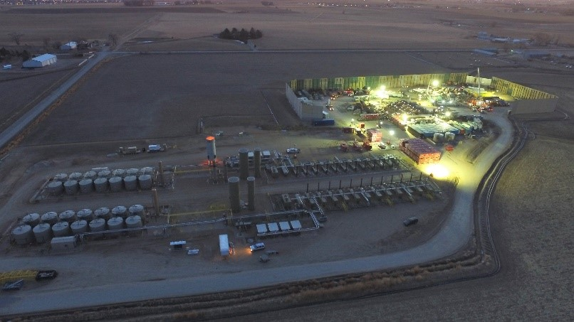
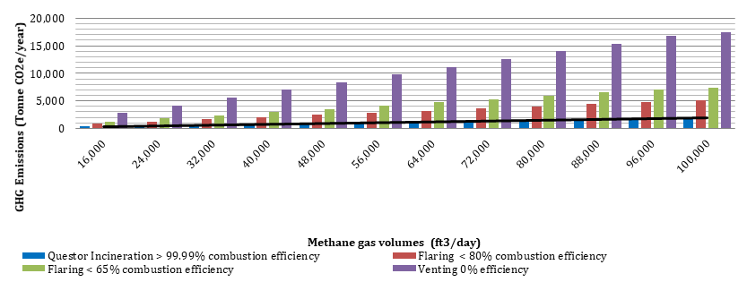
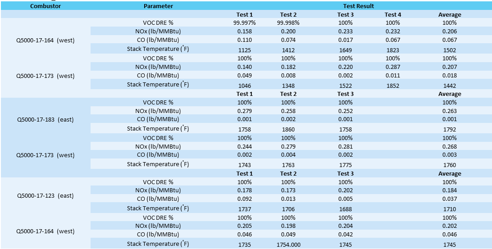
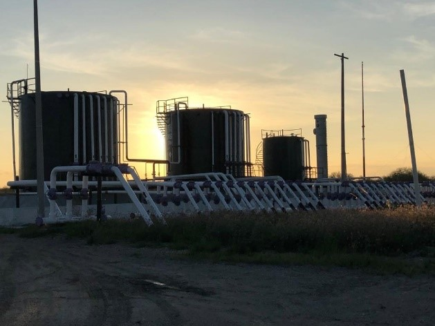

Questor Technology leads the world in changing the way that waste gas is handled. Questor ensures zero emissions and guarantees that no harmful pollutants are released into the atmosphere. In April 2020, Questor acquired ISO14034 Environmental technology verification (ETV) certificate for its Q50, Q100, Q250, Q500, Q1000, Q3000 and Q5000 model Thermal Oxidizer equipment (Q-Series) making it the first ETV-certified clean combustion company in the world.
ISO 14034 is an internationally recognized certificate that verifies the performance of innovative environmental technologies.
VERIFICATION STATEMENT Download
Questor’s Gas Emissions & Methane Monitoring Analytics (GEMMA) is a digital data platform that provides 2477 performance monitoring of Questor’s geographically dispersed field devices. Initial site evaluations establish a baseline for the "before" emissions scenario to assess results after emission-reducing activities and technology is applied. Field sensors that are connected as an Internet of Things (IoT) automatically upload emissions data to a secure cloud server, which relays the uploaded emissions to a central Emissions Excellence Center (EEC) located in Calgary, Canada. These data provide a basis for comparing before and after results
Once uploaded to the EEC, Questor manages the data on a blockchain-based platform that stores data in a transparent and highly auditable format that interested parties can monitor to ensure that sites have zero emissions and emissions reductions are quantified. Clients receive automated emissions reduction reports, which facilitate information sharing with regulators, investors, and other third-party groups. The quantification, generation, verification, and trading of emissions reduction credits are also automated.
GEMMA creates economic and process efficiencies by allowing continuous remote monitoring of geographically dispersed field installations and drastically reducing on-site maintenance requirements. Ongoing data analysis using artificial intelligence instantly identifies and signals anomalous performance, such as equipment failure or environmental alarm conditions, enabling real-time response and minimizing methane emissions.
In a zero-emission shale pad site in Colorado, Questor is tackling methane at the source globally by using our technology to eliminate flaring, venting, and fugitive emissions.

Source: Questor Technology
Through this process:

Figure 1. Comparison of Greenhouse Gas Emissions Under Different Methane Gas Management
Strategies

Table 1. Typical Test Results from Questor’s Thermal Oxidizers
Questor is tracking performance data and supporting greenhouse gas trading systems through verification of emissions reduction credits.

Source: Questor Technology
At this site: